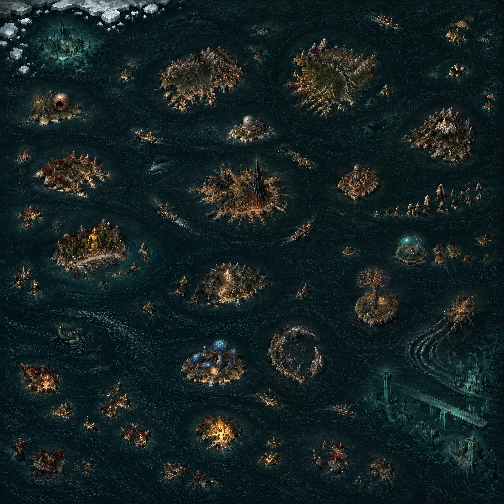

THE SUBTERRANEAN SEA
诡秘地海
地海世界
航海图集 · 第一卷
地海世界
巨坑远征
全球地表
海面层
01
100%
当前位置：位置未载入
显示航路
只看传闻
地点索引
调整图钉
保存落点
导出坐标
导入坐标
清除调整
━ 相邻航路
━ 已记载航程
┄ 推测航线
×
规划至此
航路
×
纳入推测接续航线
出发
N
W
E
S
✧
正在展开海图
THE SUBTERRANEAN SEA